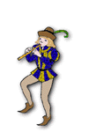

|

French version
HOME
ORIGINS
ENGAGÉ
MARRIAGE
TRAVEL
FAMILY
DEATH
SÉBASTIENNE
DESCENDANTS
SOURCES

SIGN
MY GUEST
BOOK
| |
Two pages of this site
are yet to be translated into English so that the site is complete, those
devoted to the family and the death of Matthew.
If there are volunteers, they are welcome.
|

Mathieu
Choret
was one of the pioneers who
established themselves in New France. After a century of fruitless
efforts, the colonization of Canada truly began in 1634. Mathieu settled
there in 1647 with his spouse, Sébastienne Veillon.
One of Mathieu’s
descendants is actually the prime minister of Quebec, M. Jean Charest. You
will find more information on this subject in the section DESCENDANTS.
To know about the life
of Mathieu Choret click on the navigation buttons on the left.
|
|

IF
YOU ARE ALSO A DESCENDANT OF MATHIEU, OR, IF YOU HAVE COMMENTS ABOUT THE
SITE, LEAVE A MESSAGE IN MY
GUEST BOOK.

|
|
PLEASE
NOTE: IF YOU DO NOT SEE CERTAIN IMAGES ON THIS SITE YOU NEED TO LOWER THE
SECURITY LEVEL OF YOUR FIREWALL, THE LATTER IDENTIFYING THE PICTURES DONE
WITH THE SOFTWARE FRONTPAGE AS POP UPS.
Vous
êtes le  th visitor since february 12, 2008.
th visitor since february 12, 2008.
Welcome to each and everyone of you.
Before February 12, 2008, there were 252
visitors on the site.
|
|